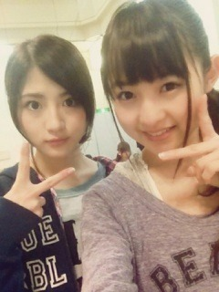

| 2012/12 24 Mon | 327回目*marika |
全国握手会in京都
来てくださったみなさん
ありがとうございました。
ミニライブ
♪指望遠鏡
♪春のメロディー
♪やさしさなら間に合ってる
♪制服のマネキン
たくさんの人で溢れてて
感動した...おおん
春のメロディー、
久しぶりに踊ったのかなんか
動きがぎこちなくなった。
上手くいかなかった...反省。
でも楽しかった♪
今日の抽選会はね！
メンバーがガチで選んだ
クリスマスプレゼントの抽選

なににしようか悩んだけど...
私がかわいいなって思ったのに
しました！
まりっかサンタからのプレゼント、
当たった方おめでとうございます

ね？ポーチかわいいでしょ？うへへ
ミニファイルもぜひ使ってください！
そして、握手会。
あすかとペアでした！
あすかは朝から体調が悪かった
みたいだけどライブも最後まで出て
握手会も辛い中よく頑張ってました。
あの調子だと出れないかなって
心配してたけど。。
あすかは本当に強い子だなあ。
辛かったね。あすか
本当によく頑張ったね。
お疲れ様＊
何度か休憩しながらで、
後半は私に一人でしたが
みなさん本当に優しくて...
握手しにしてくれて嬉しかったです！
サンタさんとかトナカイさんの
格好とか...みんなかわいかったで笑
昨日も来てくれた方も
今日たくさん来てくれて
めっちゃ楽しかったあ

まりっ会入会したい！
って言ってくれて嬉しかった！！
リクエスト5
ポニーテール

久しぶりにポニーテールしたよー
踊ってる時うしろで髪ゆらゆらしてて
違和感←ぇ

若月

**********
 握手会に行ってみたいなぁ～
握手会に行ってみたいなぁ～
っていうメンバーは？
 ゆったん、らりん
いいダイエット方法とかある？
夜18時以降食べない。
ゆったん、らりん
いいダイエット方法とかある？
夜18時以降食べない。
甘いものは食べない。
生野菜から食べる。
健康的に痩せたいなら
3食しっかり食べる。
適度な運動。
...まじめに書いてみたよ

私も頑張る～
メンバーの誰の家に
よく泊まりに行きますか？
まひろ！
クリスマスイヴ？イブ？
本当はどっちなのー？
あーどっちもあるよね。
私はイブって言ってる！
じゃがりこのおすすめの味は
なんですか？
チーズ
 春のメロディーのタイプC と、
春のメロディーのタイプC と、
個人pvが入ってるタイプBと、
どっちが見て欲しい？
春メロも見てほしいけど...
個人pvは買わないと見れないから
タイプCかな><
写真にしているらくがきは
手で書いているんですか(ﾉ´･ω･)ﾉ？
コツ教えてください！
手で描いてるよ！
画像ズームして描けるから
細かい絵もなんでも描けちゃうの

ヘアメイクはみんな
自分でやってるの？
できる子は自メイクだけど、
ヘアはみんなやってもらってるよ。
私はメイクもやってもらってる！
**********
昨日今日と、本当に楽し過ぎたな～
あらためてみなさん、
だいすきですっっっ

 ////
////
////
ハッピーメリークリスマスイブ！！！！！！！！！！！
なんてねなんてね！
てへぺろてへぺろーーーーーー
ぐはははははははは
＼帰りのメンバー／

左上から若月、真洋
マスクで目が見えないみさ
生駒は...東北人。
みんなお疲れさん

明日もリハ頑張ろうねー！
まりか
コメント(264)
2012/12/24 23:00